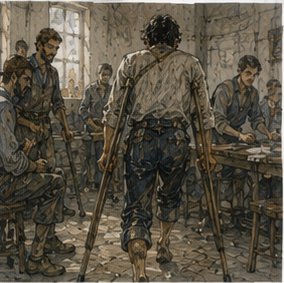
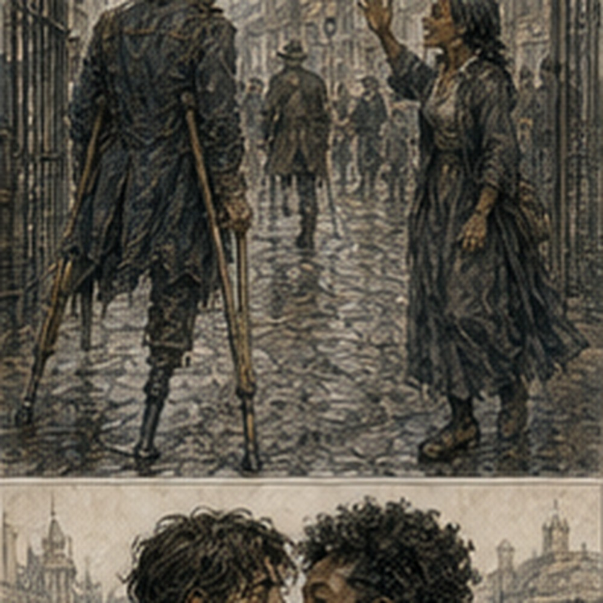

Crutches were more complicated than sticks. This offended me immediately. They were waiting beside the parallel rails after breakfast. Wood. Padded tops. Hand grips. Rubberless feet wrapped in some rough dark material for traction. Adjustable by pegs. I looked at them. Nerin looked at me.
“No.”
“I didn't say anything.”
“You made the face.”
“What face?”
“The one before you explain why equipment is wrong.”
“I was assessing.”
“Face.”
Sera came in behind him.
“Wound first.”
Good. I was allowed to hate the crutches later. The dressing came off. Less drainage. Less swelling. The dark edge had narrowed again. Sera pressed. Looked. Smelled. That part remained disconcerting.
“No fever,” she said.
“I know.”
“Wound bed is healthy.”
“Entirely?”
“No.”
“Then don't say healthy.”
“I said wound bed, not entire limb.”
Fair.
“The questionable edge?”
“Still viable.”
“Revision?”
“Possible.”
“Likely?”
“Not currently.”
There. Better.
“When do you stop saying possible?”
“When it stops being possible.”
“Terrible answer.”
“Accurate.”
Hessa was not there. That bothered me less than it would have two days ago. Progress. Or abandonment. Probably progress. Sera redressed the limb.
“Today we try crutches.”
“Finally.”
“Supervised.”
“Obviously.”
“No stairs.”
“Coward.”
“No stairs until you can cross a room without attempting to use your missing foot.”
“I did that yesterday.”
“You stood.”
“I crossed mentally.”
“That does not count.”
I hated medicine.
*
The crutches fit badly. Not dangerously. Badly enough. Too high first. Then too low. Nerin adjusted them. Sera watched my shoulders.
“Weight on hands, not armpits.”
“I know.”
“Show me.”
I stood between the rails first. Right foot. Hands. No left foot. Up. Stable enough. Then Nerin handed me the crutches one at a time. The first thing my body wanted to do was put the left crutch where my left foot belonged. Not entirely wrong. Not entirely right. I positioned both slightly ahead.
“Small,” Nerin said.
“I know.”
“Then do small.”
Crutches forward. Weight through hands. Right foot forward. Easy. Except my left foot tried to step too. My hip flexed. Residual limb swung. Balance shifted. I stopped.
“Good,” Sera said.
“What?”
“You stopped.”
I looked at her. Of course. Fuck. Again. Crutches. Hands. Right foot. The rhythm was ugly. Plant. Move. Hop was the wrong word. Step-through. No. Swing. No. Words did not matter. My body mattered. Three movements. Pause. Four. My shoulders tightened. I was gripping too hard. Nerin tapped my right hand.
“Loosen.”
“I will fall.”
“No.”
“I might.”
“Yes.”
Terrible distinction. I loosened. Better. Annoying. We went perhaps ten feet. Turn. Turning was worse. My old body map wanted a left pivot. There was no left pivot. I moved the crutches. Right foot. Too large. Sera's hand touched my back. Not catching. Ready. I hated it. I completed the turn. Then six feet back. Chair.
Sitting required its own sequence. Back until right calf touched chair. Both crutches one side. Reach. Lower. My left foot searched backward for the chair leg. Nothing. I sat too fast. Pain through the residual limb.
“Fuck.”
Nerin said, “Excellent.”
“Why?”
“You didn't fall.”
“The standard has collapsed.”
“Yes.”
I breathed. My arms were already tired. Not exhausted. Young body. Good shoulders. Years of sword work in another life. Current body trained enough. Still tired.
“Again,” I said.
“Rest,” Sera said.
“Again.”
“Five minutes.”
“Three.”
“Five.”
“Four.”
“Five.”
Professionals had no negotiation skill.
*
By the third pass I could cross the training room without stopping every movement.

Not gracefully. Not safely alone. But enough that my mind started trying to optimize. Crutch angle. Hand position. Right stride. Turn radius. Energy. No. Too soon. I noticed anyway. My right calf did more. Shoulders more. Hands would blister if I was stupid. Floor mattered. Wet stone would matter. Loose gravel. Mud. Doors. Carrying things. Fuck. Nerin saw my face.
“No.”
“I didn't say anything.”
“Face.”
“Everyone has become intolerable.”
Sera said, “Good. Let's try a doorway.” The training-room doorway had a raised threshold. Maybe half an inch. I had crossed thresholds my entire life. Now it was curriculum. Crutches over. Right foot up. Body through. Simple. I caught one crutch tip against the edge. Small. Enough. My body tried to recover with the missing foot. Hip snapped down. Nerin caught my belt.
I swore. Loudly. The woman from the next bed, now walking the hall with a head bandage, called, “Morning.”
“Fuck you.”
“Better.”
Everyone was enjoying this. I reset. Looked at threshold. Not a system. A piece of wood. Crutches. Right foot. Through. Done.
“Again,” I said.
Sera said, “Later.” I did not argue. Mostly because my hands hurt.
*
Discharge became real after lunch. Sera sat with a sheet. Not a report. Instructions.
“Tomorrow, if the wound remains like this.”
I stared.
“Tomorrow?”
“Yes.”
“Home.”
“Destination still unresolved.”
“My room.”
“Stairs still unresolved.”
“I have crutches.”
“You have used crutches for one morning on a flat infirmary floor.”
“Successfully.”
“You nearly fell over a threshold.”
“Then successfully.”
Sera ignored that.
“We can keep you one more night beyond medical need if necessary. Not indefinitely.”
“I don't need indefinitely.”
“Good.”
“Tomorrow.”
“Maybe.”
I pointed.
“No.”
She almost smiled.
“Tomorrow if wound remains stable and you demonstrate safe basic mobility.”
“Stairs?”
“No full flight here.”
“Then how do I demonstrate?”
“We have three practice steps in the rear therapy yard.”
Of course. Guild had stairs.
“Rail?”
“One side.”
“My lodging has no rail.”
“Then your lodging is not where you practice first.”
“I can use wall.”
“Later.”
“Crutch and wall.”
“Later.”
“Sit and lift.”
“Later.”
“Someone behind.”
“Later.”
I stared.
“You have one word.”
“It works.”
“What if I use the downstairs room for one night?”
The sentence escaped. Sera did not celebrate. Good.
“One night would be safer than forcing fourteen stairs before you're trained.”
“I didn't say I would.”
“You asked.”
“I know.”
“Then yes.”
I hated yes.
“What about washroom?”
“Downstairs.”
“Privy?”
“Outside.”
“Threshold?”
“Jorren didn't measure.”
Sera looked at me. I sighed.
“Small.”
“Ground?”
“Packed dirt.”
“Wet?”
“If rain.”
“Chair?”
“Could place one nearby.”
“No.”
“Why?”
“I don't know.”
“Excellent reason.”
“Fine.”
The downstairs room had become possible. Not acceptable. Possible. Different. I folded the instruction sheet.
“Can I leave tomorrow and come back for wound checks?”
“Yes.”
“How often?”
“Daily at first.”
“Here?”
“Yes.”
“Transport?”
“You tell me.”
Fuck. Walking from lodging to Guild on crutches was not happening tomorrow. Cart. Chair. Friend. Paid ride. All dependence. All logistics.
“Can Guild transport?”
“For the first return, likely.”
“After?”
“We'll arrange based on need.”
Arrange. People arranging me. I hated that phrase. Sera stood.
“Practice steps this afternoon.”
Good. Something concrete.
*
The practice steps were outside. Sunlight hit my face. Real sunlight. Not window. I stopped at the infirmary door. Nerin waited.
“You okay?”
“Yes.”
I was. Then not. The Guild courtyard was busy. People crossed. Boots. Carts. Messages. Someone carrying a spear bundle. Two apprentices arguing about a posted contract. A Copper I recognized from somewhere glanced at me. Then at the crutches. Then away. Fine. A woman stared. Not long. Fine.
A boy carrying ledgers almost walked into a post because he was looking. Less fine. I wanted to disappear. Then I wanted everyone to look correctly. Whatever that meant. Nerin said nothing. Good. The rear therapy yard had three stone steps. One rail on the right going up. Perfectly dry. Wide. Safe. I hated them.
Sera demonstrated with a spare crutch. Not because she needed one.
“Up: rail, crutch, right leg does the work. Keep the residual limb clear. One step at a time.”
“I know.”
“Down is different.”
“I know.”
“Show me.”
I did not know. Not in my body. I positioned. Rail right hand. Both crutches left? No. One crutch. Nerin took the other.
“Why?”
“Because you have a rail.”
Fine. Crutch left. Right foot close. Push. Step. My phantom left foot tried to follow onto the first step. Hip moved. I stopped.
“Again?” Nerin asked.
“I am still on step one.”
“Your brain isn't.”
Fuck him. Second step. Right leg pushed. Arms. Up. Third. By the top my right thigh burned. Three steps. Fourteen was not three. I knew arithmetic. Going down was worse. The empty space below looked larger. Crutch down. Rail. Right foot. My body wanted left foot first. The old rule. Bad leg down.
Except there was no foot to place. The residual limb swung instinctively toward the lower step. Nothing touched. My stomach dropped. I froze.
“Greg,” Sera said.
“I know.”
“Don't rush.”
“I know.”
“Look where the crutch is.”
I looked. Stable.
“Hands.”
Stable.
“Right foot.”
On upper step.
“Now lower.”
I lowered. One. Then two. Then three. At the bottom my arms shook. I was furious. Not at stairs. At arithmetic. Three. Fourteen. More than four times. No. Twelve then landing then two. Different. Rest opportunity. Maybe. Wall. Window. No rail. Stop. I was doing it. Sera said, “What?”
“Nothing.”
“Face.”
Even she had learned.
“Fourteen is not tomorrow.”
“No.”
There. I looked at her. She did not soften it. Good.
“Could be soon.”
“Yes.”
Not tomorrow. Soon. Maybe. I sat in the yard chair. Sun on my face. The residual limb throbbed. My right leg felt worked. Good worked. Not injury. I missed that. I missed being tired because I had done something instead of because my body was healing. This was something. Three stairs. Pathetic. Real. Both.
*
Antonius came in the afternoon. Personally. That surprised me enough that I said, “Why?” He stopped beside the bed.
“Excellent greeting.”
“You have runners.”
“Yes.”
“Therefore?”
“I was nearby.”
Lie. Maybe. He wore a dark coat too good for the infirmary. No ledger. More suspicious. He looked at the crutches. Then me.
“You look terrible.”
“Thank you.”
“Less terrible than reported.”
“Who reported?”
“Everyone.”
Terrible city. He sat without asking.
“Debt remains.”
“I received your love letter.”
“Good.”
“Very moving.”
“I worked hard.”
“You dictated it.”
“Yes.”
We sat. Antonius looked at the calendar.
SEE ALDEN.
DEFERRED.
His eyes moved. No comment.
“Where are you going tomorrow?” he asked.
“My room.”
“Upstairs?”
“Yes.”
“No.”
I stared.
“You too?”
“I own buildings.”
“That does not make you a surgeon.”
“It makes me familiar with stairs.”
“I can learn.”
“Yes.”
“Soon.”
“Yes.”
“Not tomorrow.”
“Probably not.”
I hated consensus. Antonius crossed one ankle over the other.
“You have options.”
“Do not offer me one of your rooms.”
“I wasn't.”
“Good.”
“I was going to charge you.”
I laughed. Pain. Still worth it.
“Asshole.”
“Yes.”
“What option?”
“Vale property two streets from here. Ground floor room. Currently empty. Worse than yours.”
“No.”
“Cheaper than yours.”
“No.”
“Closer to Guild.”
“No.”
“Indoor privy.”
I stopped. Antonius smiled.
“Manipulative.”
“Effective.”
“No.”
“Fine.”

He did not push. That made me suspicious.
“What?”
“Nothing.”
“You don't visit injured debtors for nothing.”
“I visit interesting investments when circumstances change.”
“I am not an investment.”
“You are absolutely an investment. A poor one currently.”
There. Normal Antonius. Good.
“What changes?”
“Your debt schedule.”
“Deferred.”
“Short term.”
“And long?”
“I don't know yet.”
“Because?”
He looked at the bandage.
“Because I don't know what work you'll be able to do.”
Same answer as Ressa. Different stakes.
“Everyone keeps saying that.”
“Then perhaps it is true.”
“I can do desk work.”
“Yes.”
“Records.”
“Yes.”
“Analysis.”
“Probably.”
“Magic eventually.”
“Not my department.”
“Warehouse counting.”
“Possibly.”
“Inspection.”
“Depends.”
“Escort.”
Antonius raised an eyebrow.
“Currently?”
“No.”
“Then stop trying to negotiate with next month.”
I hated him.
“That sounds like Hessa.”
“I'll charge her.”
“Do not.”
He smiled.
“Your debt does not require you to return to the exact labor mix you had before.”
I looked at him.
“What?”
“Money is famously indifferent to which hand earned it.”
“Leg.”
“Yes.”
“Bad.”
“Very.”
I laughed anyway. He continued.
“If you can earn elsewhere, you pay. If you work for me later, we credit work that is useful. I am not assigning you three hours of dramatic limping through a warehouse because tradition demands it.”
“Compassion.”
“Efficiency.”
Better.
“Ground floor room still no.”
“Noted.”
“Do not rent it.”
“I rent rooms to people who agree to rent them.”
“Usually.”
He looked offended.
“Mostly.”
There he was. He stood.
“Rest.”
“Everyone says that.”
“Then perhaps it is also true.”
“Go collect someone's house.”
“Storage.”
“Same.”
He left. I felt better. Annoying.
*
Hessa came after Antonius. She found me practicing crutch placement beside the bed without standing.
“Why?”
“Hands.”
“What?”
“Grip position.”
“Blisters?”
“Not yet.”
She checked my palms.
“Starting.”
“Fuck.”
“Wrap tomorrow.”
“With what?”
“Cloth.”
“Revolutionary.”
She checked my channels. Quiet. No casting. Good. Then the leg. She did not unwrap it fully. Sera had already done enough.
“Pain?”
I told her.
“Phantom?”
Burning. Itching. Sometimes pressure. Sometimes foot flat on floor. Sometimes ankle bent.
“Any change with fatigue?”
“Worse.”
“Medication?”
“Helps real pain more.”
“Expected.”
“Can magic affect phantom sensation?”
“Not usefully that I know.”
“Could Barrier?”
She stared.
“I am asking.”
“Against your own nerves?”
“Not exactly.”
“No experiments.”
“I said asking.”
“You have a face.”
Fuck everyone. Hessa sat.
“Where tomorrow?”
“Downstairs storage room.”
The words hurt. Not much. Enough.
“Temporary?”
“Yes.”
“Good.”
“Do not.”
“I said one word.”
“It was loaded.”
“It was not.”
“Hessa.”
“Greg.”
We stared. Fine.
“I'll move upstairs when stairs are safe.”
“Yes.”
“Not when everyone decides I should be comfortable downstairs forever.”
“Yes.”
“Good.”
She nodded. No argument. That helped.
“Will you come to lodging?”
“For the first check after discharge if Sera wants.”
“Why?”
“Because you are my patient.”
“Magic patient.”
“Currently also idiot patient.”
“Not a category.”
“I have created it.”
She left before I could improve the classification.
*
That evening Jorren brought my coat. And one glove. I looked at him.
“Where is the other?”
“Dorn has it.”
“Why?”
“He says blood.”
Oh. Right.
“Can it be cleaned?”
“Probably.”
“Seven copper.”
“I know.”
He put the coat on the chair.
“Keeper cleared the storage room.”
“Temporary room.”
“Storage room.”
“Temporary.”
“Fine.”
“Bed?”
“Cot.”
“No.”
“Bed frame doesn't fit.”
“I have a bed upstairs.”
“Yes.”
“Could move mattress.”
“Down fourteen stairs.”
“Two people.”
“Keeper said no.”
“Why?”
“Because she doesn't want the good mattress on storage-room floor.”
Reasonable. Fuck.
“Cot.”
“Yes.”
“Blanket?”
“Yes.”
“Mirror?”
“No.”
I looked at him. He looked back.
“Why do you need a mirror?”
“I don't.”
“Then good.”
I wanted the mirror. Not for my face. The oval mirror above the cracked washbasin. First morning. Nineteen. Beard. Eyes. No. Stupid.
“Bring it.”
“What?”
“Mirror.”
“Why?”
“I don't know.”
Jorren considered.
“Tomorrow?”
“Yes.”
“Fine.”
“Do not break it.”
“I will deliberately break it.”
“Fuck you.”
“Anything else?”
I looked around. Wooden horse. Calendar. Accident report. Boot. One boot. My right boot sat under the chair. Left boot gone. Tam-fixed eyelet. The wrong boot had survived.
“Soap.”
“Your soap?”
“Yes.”
“You're leaving tomorrow.”
“I know.”
“Then get it yourself.”
I looked at him. He smiled.
“Asshole.”
“Improving.”
He stayed for half an hour. We talked about nothing useful. A fight outside north grain. A dog that stole half a sausage. Someone at the green door had apparently decided Sevren was in love with a baker because he accepted two free rolls.
“Is he?”
“No idea.”
“Which baker?”
“Why?”
“Data.”
“No.”
Fine. When Jorren left, I packed. This was absurd because I owned almost nothing in the infirmary. Calendar. Horse. Report. Coat. One glove. Right boot. Instruction sheet. Pencil. I put them in a cloth bag. Then realized I could not carry the bag while using two crutches. I stared at it. Of course. Backpack. I owned one. At lodging. Useful. Tomorrow someone would carry this bag.
I hated that. Then I thought about the threshold. Door. Crutches. Bag. No free hand. Not impossible. Just different. Stop. No list. I left the bag on the chair.
*
I slept badly. Not pain. Anticipation. The phantom foot kept finding the floor. Every time I woke, I had to remember where I was. Then what I was. No. Who. Too dramatic. Where my leg ended. That. Morning eventually came. Sera inspected the wound. No fever. No increased drainage. Margin viable. No revision today.
She said the words:
“You can leave.”
I expected something. Relief. Fear. Victory. Nothing arrived correctly.
“Today?”
“Yes.”
“Crutches?”
“With supervision.”
“Stairs?”
“Three practice steps again before you go. No fourteen.”
“Storage room.”
“Yes.”
“Temporary.”
Sera looked at me.
“Greg.”
“What?”
“You are allowed to hate it.”
I stared. She continued before it became therapy.
“You are not allowed to turn hating it into falling down fourteen stairs.”
Good.
“Fine.”
Nerin brought the crutches. I stood. Hands. Right foot. No left foot. The phantom foot planted anyway. Let it lie. Crutches forward. Right foot. Again. Doorway. Threshold. This time the crutch cleared. Courtyard. Sun. Three practice steps. Up. Rest. Down. Better. Not good. Better.
At the bottom I looked toward the Guild gate. Jorren waited there with a hired handcart. Not for me. For my things. I hoped. He saw my face.
“Chair's behind it.”
“Fuck you.”
“Good morning.”
The woman with the head bandage, passing behind us, called, “Morning.” I laughed. Then I moved toward the gate. Slow. Crutches. Right foot. Crutches. Right foot. The city did not stop. Neither did I. Not far. Enough.